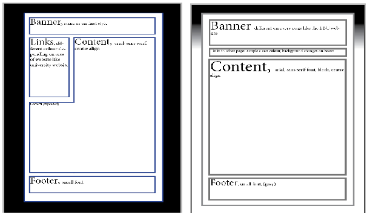
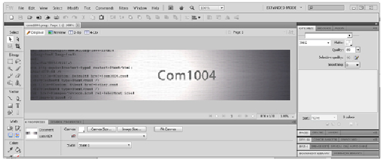

-- To view a PDF of this page please click here (displays better quality images) --
Development Process
To implement my website I started off with the design that I had done in InDesign

From these designs I started to create the code in Adobe Dreamweaver (using only the code section) which started to create the overall structure of the website just using HTML. From this I created an overall template with the same head and body that would be used in all of the pages.
First I started with the DOCTYPE which is XHTML 1.0 Strict then I added the HTML tag.
Next I added the head part of the page which is not displayed in the browser this contains information on the content on the page including the page title. I also added a favicon to my site which appears next to the title of the page in browsers that have tabs. The head is also where the style sheets will be linked to.
I then started on the div tags in which all of the content is added using the same scheme as my design.
Once I had done all of this it left me with a blank template for a page.
Using this template I created all of the other pages and started to add content to each one of them. The images I used for the content are mainly screen shots and are scaled to size using adobe fireworks which has better scaling algorithms than the browsers. By scaling the images the file size is also reduced meaning the images load quicker and require less processing power to be displayed.
Next I created all of the banners for the pages. To do this I found an image on Google (non-copyright) and imported it to Adobe Fireworks. Once I had imported it I changed the size of the image to 870 x 170 pixels so all of the banners would be the same size. I then added text to the image so the user knows what page they are on. This is what the editor looks like:

Once I had finished editing the image I saved it as a PNG file as the PNG format saves images with text on them much better than JPEG or GIF.
After I had finished all of the content on the pages and added all of the links and images I started to work on my style sheets.
A feature I added in after the design was the bread crumbs which adds another method of navigating trough the system and is helpful on sub-pages. The bread crumbs are created by just adding clickable links of previous pages.
The style sheets for the website are linked to every page using the "link" tag this way many style sheets can be added to one website.
The first style sheet
the first thing I did in this style sheet was the background image using a thin gradient image I made this in Fireworks by creating a larger image and then reducing it to 2 pixels wide so it can be repeated by using the "background-repeat" command in CSS which makes the image load much quicker.

I then added the borders and padding to the divs to give the modulated look this is also where I made the wrapper stay in the middle of the page by using the "margin:0 px auto;" command which sets a 0 margin but makes the auto scales the margin automatically so it stays in the middle of the page.
I next started on the menu bar the menu bar has a ID and a class the ID sets the overall width and height. This is also where I used the "overflow: hidden;" command which stops any other items in the list form being shown that are needed for the other menu.
The class element sets the width of each link sets the link background and makes the whole "li" tag clickable by using the CSS command: "display: block;"
After that I created the style for the content by changing the font to Arial, Helvetica, sans-serif and setting the size to 16 px.
In the content there are specific classes for certain pages for example there are many classes relating to the table in the about me page the table needed to be asymmetrical and to have a heading with a border to fit in with the style.
I then created the style for the footer and the images in it which are sourced from the W3 validation service page.
The second style sheet
Again I started with the background image but this time I used a tile generator from: http://www.stripegenerator.com. Which is slightly different from the original design with a plain black background.

Using this method a very small image (131 bytes) can be applied to the whole background saving a lot of bandwidth and still giving a nice effect. The colours I chose are very similar to each other to give a very subtle stripe effect that does not distract the user too much.
I then created all of the styles for the pages which all have a class relating to their colour which is changed by changing the border colour. I found a colour scheme by using the site: http://www.colorspire.com/

Debugging
To debug my code I mainly used the method of making small changes and then checking it in a browser. I used checked in most of the main browsers that the website still looked the same in them.
After I had completed the content for one page I used the W3 validation service to properly check that the code was correct.
To view a site map created by Microsoft Visio: Site Map